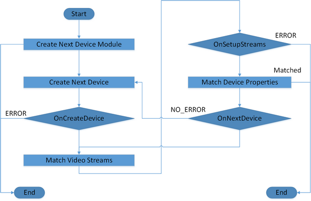

Handler |
Top Previous Next |
|
Namespace Hierarchy
Description The Handler interface is a set of callback functions/delegates for the LocateStreams function as illustrated in Figure 71. The application must implement the interface.  Figure 71: PXCCaptureManager::LocateStreams Callback Functions Examples Example 132 shows how to create a handler. C++ Example 132: Create a Handler
C# Example 132: Create a Handler
Java Example 131: Create a Handler
|